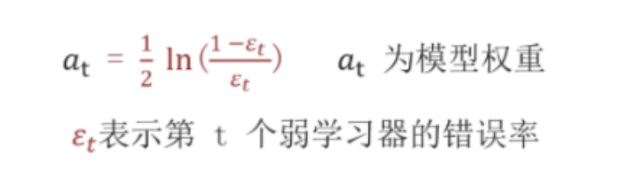
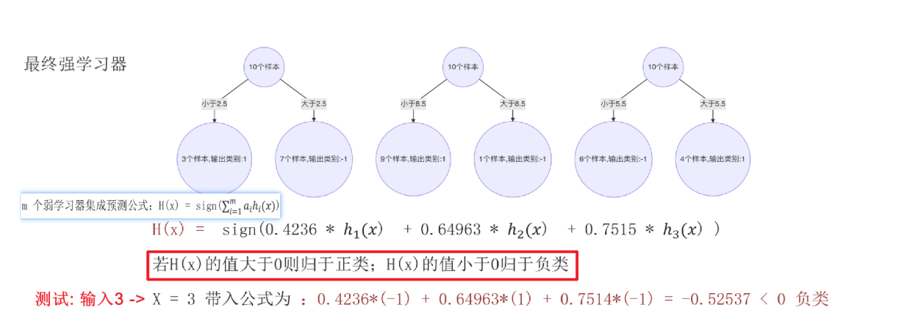
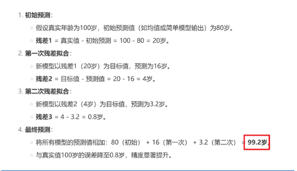
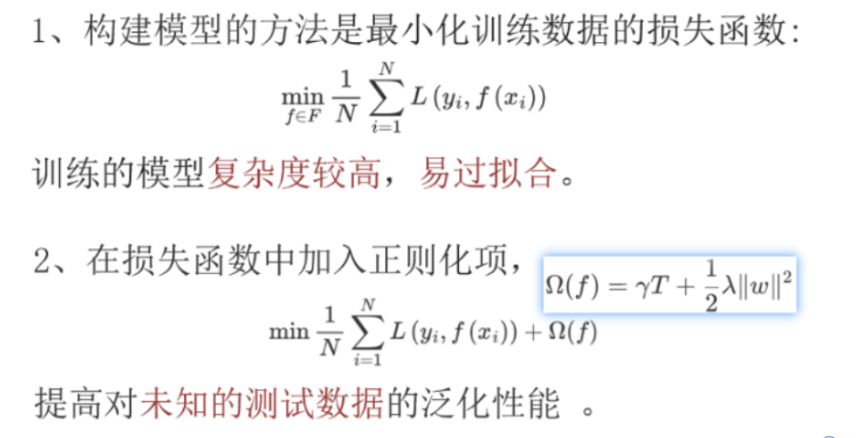
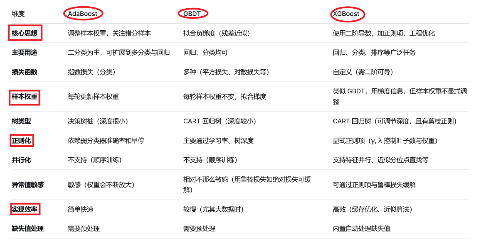

机器学习–集成学习
一、CART（ClassifierAndRegressionTree）决策树
1. 分类任务：基尼指数(不纯度)(Gini Impurity)
1.1 基尼值和基尼指数的计算
- ==基尼值 = 1-（各类别概率的平方和）==
- ==基尼指数 = （各个类别占比 * 基尼值）的和==
1.2 计算回归特征的基尼指数
- 先把线性值排序
- 取没相邻两个值的中间数
- 然后一次八每个中间数作为阈值 计算基尼值和 基尼指数
- 最后找到最小的基尼指数对应的中间线性值，作为拆分点
1.3 API
- sklearn.tree.DecisionTreeClassifire
2. 回归任务：最小平方误差MSE，最小绝对误差MAE
2.1 计算
- 将线性值排序
- 取出每两个值的中间数
- 然后依次把每个中间数作为阈值做计算
2.2 API
- sklearn.tree.DecisionTreeClassifire
二、集成学习
核心思想：
大白话：三个臭皮匠顶个诸葛亮
专业解释：多个弱学习器组成一个强学习器
1. bagging思想
1.1 典型代表：随机森林（==RandomForest==）（基线模型常用）
- 默认底层用了n个CART决策树
- API：
- 分类模型：sklearn.ensemble.RandomForestClassifier
- 回归模型：sklearn.ensemble.RandomForestRegressor
- 核心参数：
- ==bootstrap = Ture== 代表有放回的随机抽样
- ==n_estimators = 100== 代表默认100个CART树（弱学习器）组成随机森林（强学习器）
- …
1.2 核心思路：
- ==有放回==的随机抽样
- 多个模型==并行==训练
- 最后结果取==平权==投票
2. boosting思想
2.1 典型代表：XGBoost（数学竞赛常用）
- API:
2.2 由来
- XGBoost是基于GDBT的优化
- GDBT是AdaBoost的进一步拓展
2.3 核心思路：
- 拿==全部==数据
- 多个模型==串联==训练
- 最后的结果==加权==投票
2.4 AdaBoost、GDBT、XGBoost
1. AdaBoost（Adaptive Boosting）– 先驱
- ==核心思想：核心是关注上一个模型的样本权重(错误样本权重放大,正确样本权重缩小)。==
- ==实现流程：通过调整样本权重来强调分错的样本，每轮训练一个新的分类器，最终加权投票。==
- 准备输出特征和标签数据
- 初始每个样本的权重: 1/N
- 根据初始化的数据和样本权重,训练出第一个弱学习器
- 计算弱学习的错误率->第一个模型权重

- 错误率月底,模型表现越好,权重越高
- 更新每个样本的权重(错误的放大,正确的缩小),传递给下一个模型

- Dt(X)是之前的样本权重,上述公式结果代表新的归一化后的样本权重
- 5.重复1-4步,训练出多个弱学习器,最后组成强学习器

2. GDBT/GBDT(Gradient Boosting Decision Tree) – 理论基础
==核心思想：核心是关注上一个模型的负梯度(使用一阶导,且没有正则化容易过拟合)==
==实现流程: 通过拟合负梯度（残差）来逐步优化模型，每轮训练一个树去拟合上一轮的负梯度（残差），最终累加得到结果。==
BDT提升树拟合残差过程

GBDT梯度提升树拟合负梯度过程
1.初始化模型
- 设定一个初始预测值（通常是目标变量的均值），即第一个弱学习器（树）的预测值。
2.计算残差（负梯度）
- 使用损失函数的负梯度（如均方误差下的残差）作为当前模型的“伪残差”，代替原始标签。
- 训练弱学习器（决策树）
- 使用当前样本特征和上一步计算的残差作为目标，训练一棵回归树（通常限制深度）。
- 更新模型
- 将新训练的树乘以一个学习率（步长），加到当前模型上，更新预测值。
5.重复步骤 2-4
不断用新树的预测去拟合前一轮的残差，逐步减少损失函数值。
6.组合所有弱学习器
将所有弱学习器的预测加权累加，得到最终的强学习器。
3. XGBoost（eXtreme Gradient Boosting）– 工程集大成者
- ==核心思想：对GBDT的工程优化+引入二阶泰勒展开+引入显示正则化（精度高，防过拟合更强）==
- ==核心公式：目标函数 = 损失函数 (Loss Function) + 正则化项 (Regularization Term)==

- XGBoost的优势：
- ==引入泰勒二阶：相当于不仅知道了下山的方向（一阶导数），还知道了坡的陡峭程度（二阶导数）==
- 好处：
- 更精确的损失下降方向（一阶：知道方向，二阶：知道下降了多少）
- 更快的收敛速度（二阶信息方法：能用更少的树达到更好效果，减少了训练时间）
- 定义了更通用的框架（只要损失函数是二阶可导的，就可以无缝集成到XGBoost中。这使得XGBoost的适用性极广，不再局限于回归问题）
- 直观比喻：
- GBDT（一阶）：蒙着眼，找到最陡峭的方向，迈出一步
- XGBoost（二阶）：睁着眼，不仅能找到最陡的方向，还能知道有多陡，从而决定迈出最合适的一步
- 好处：
- 引入显示正则化
- GBDT模型的核心驱动力是降低偏差（Bias），通过不断拟合残差，让模型越来越复杂，容易导致过拟合（高方差）
- ==目标函数 = 损失函数（Loss Function） + 正则化项（Regularization Term）==
- 正则化项通常由两部分组成，用于控制模型的复杂度：
- 叶子节点数量的惩罚：树的结构越复杂（叶子节点越多），惩罚越大
- 叶子节点权重的L2范数惩罚：叶子节点的输出值（权重）越大、越极端，惩罚越大
- 好处如下：
- 直接控制模型复杂度：
- 正则化就像一个“刹车”一样，使得最终得到的结果更简单、更平滑
- 有效防止过拟合：
- 这是引入正则化最直接、最重要的好处。一个带有正则化的模型在训练集上的表现可能不是最优的，但是提高了在未知数剧集上的泛化能力
- 等同于预剪枝：
- 正则化在某种程度上实现了剪枝的效果。如果增加一个分裂点带来的损失下降，还不足以抵消因复杂度带来的正则化惩罚，XGBoost就会放弃这个分裂点，从而生成一颗更简单的树
- 直接控制模型复杂度：
- ==引入泰勒二阶：相当于不仅知道了下山的方向（一阶导数），还知道了坡的陡峭程度（二阶导数）==
2.5 Adaboost、GBDT、XGBoost的API
AdaBoost :
- 分类模型：sklearn.==ensamble==.AdaBoostClassifire；
- 回归模型：sklearn.ensamble.AdaBoostRegressor；
- 核心参数：n_estimators=50 代表默认50个CART树（弱学习器）组成AdaBoost（强学习器）,==learning_rate=1.0== 代表默认学习率是1.0；
GBDT：
- 分类模型：sklearn.ensamble.GradientBoostingClassifire
- 回归模型：sklearn.ensamble.GradientBoostingRegressor
- 核心参数：n_estimators=100 代表默认100个CART树（弱学习器）组成GDBT（强学习器），learning_rate=0.1 代表学习率为0.1，loss=”log_loss” 代表默认损失函数是对数损失函数。
XGBoost：
前提：由于sklearn中没有XGBoost的API ，需要==手动下载xgb==依赖包，pip install xgboost
- 分类模型：==xgboost==.XGBClassifire
- 回归模型：xgboost.XGBRegressor
- 核心参数：n_estimators=100 代表默认100个CART树（弱学习器）组成XGBoost（强学习器），learning_rate=0.1 代表默认学习率是0.1，objective =”binary:logistic”==默认二分类sigmoid激活函数，多分类改为：”multi:softmax”。==
总结对比
| 特性 | AdaBoost | GDBT (GBDT) | XGBoost |
|---|---|---|---|
| 核心原理 | 调整样本权重，聚焦错误 | 拟合损失函数的负梯度（残差） | 拟合损失函数的负梯度，并进行二阶优化 |
| 损失函数 | 主要指指数损失 | 任意可微损失函数 | 任意可微损失函数，支持自定义 |
| 基学习器 | 任意弱分类器（常用决策树桩） | 几乎总是CART回归树 | CART回归树，或线性分类器 |
| 正则化 | 通过调整权重间接控制 | 无显式正则化，靠剪枝、学习率等 | 显式L1/L2正则化，有效防过拟合 |
| 性能与速度 | 相对简单，速度较快 | 强大但实现朴素时较慢 | 极快，高效，精度高 |
| 主要贡献 | 提出Boosting自适应思想 | 建立梯度提升的通用理论框架 | 将理论框架工程化、极致优化，成为业界标杆 |
| 关系比喻 | 开拓者，证明了Boosting的有效性 | 理论家，奠定了坚实的数学基础 | 工程师+科学家，造出了最快最强的“火箭” |
结论
- 传承线：
AdaBoost (思想启蒙) → GDBT (理论统一与泛化) → XGBoost (极致优化与工程实现)。 - 如果你在讨论理论原理，那么 GDBT (GBDT) 是核心，它代表了梯度提升这个通用框架。
- 如果你在讨论实际应用、比赛或项目，那么 XGBoost 通常是首选，因为它是这个框架下最快、最强大、最稳定的实现之一。后来出现的LightGBM和CatBoost也是在类似框架下，与XGBoost竞争并各有侧重优化的算法。
因此，理解它们的关系，关键就是理解从AdaBoost的“调权”思想，到GDBT的“梯度”思想的理论升华，再到XGBoost“工程优化”的实践飞跃。
面试知识点串联：
一、线性回归和CART回归的区别/对比？
答：
如何选择？
- 选择线性回归，当：
- 你相信或希望探索特征与目标之间是==线性关系==。
- 可解释性要求极高，你需要明确说明每个特征的影响大小和方向。
- ==数据量相对较小==，或需要快速建立一个基线模型。
- 你希望进行==统计推断==（例如，验证某个特征是否真的有影响）。
- 选择CART回归树（或其它==集成方法==如随机森林、XGBoost），当：
- 问题中存在明显的==非线性关系或复杂交互==。
- 你更==关心预测精度==而非模型的内在解释性。
- ==数据中包含异常值、缺失值或不同类型的特征（连续、离散）==。
- 作为探索性分析，了解数据中可能存在哪些重要的决策规则。
二、决策树剪枝的分类和作用？
答：
决策树剪枝策略（停止条件）：
- 预剪枝：
- 树的最大深度（max_depth）：限制树能生长的最大层数。
- 最大叶节点数（n_estimators）：树生长到指定的最大叶节点数后停止。
- 后剪枝：
- ==自底向上==
决策树==剪枝==的核心==作用==
- ==防止过拟合==
- ==提升模型的泛化能力==
- 简化模型，==提高可解释性==
- ==减少==计算和存储==开销==
- 增强模型的==稳定性==
三、集成学习的核心思想是什么？
答：
集成学习的核心思想是将多个弱学习器组合成一个强学习器，从而提高模型的预测能力
四、讲一下集成学习中的bagging思想？
答：
bagging思想是集成学习中的一种常用思想，其典型代表是随机森林，而随机森林的底层是n个CART决策树，bagging思想的一个核心思路是：
- 做有放回的随机抽样；
- 模型进行并行训练；
- 最后的结果进行平权投票或取平均。
五、讲一下集成学习中的boosting思想？
答：
boosting思想的典型代表是XGBoost算法，其核心思路是：
- 拿全部数据；
- 模型串行训练；
- 最后的结果进行加权投票。
六、随机森林算法–为什么要随机抽样为什么要有放回？
答：
如果不放回那么每棵树使用的数据子集将完全不同且没有重叠。这虽然也能创造多样性，但会导致：
- 每个子集的数据量更少，可能不足以让单棵树学好，==容易欠拟合==。
- 无法利用OOB数据进行高效的模型评估。
- 从统计上讲，==Bootstrap（有放回）==抽样能更好地模拟从原始分布中多次采样的过程，是一种==更鲁棒==的策略。
七、随机森林的原理？
答：
随机森林的核心思路是：
- 有放回的随机抽样
- 模型并行训练
- 最后的结果平权投票或取平均 。
八、AdaBoost、GBDT、XGBoost对比？
答：
首先AdaBoost算法是先驱，GBDT是AdaBoost的扩展，XGBoost是GBDT的进一步优化；
AdaBoost：核心是关注上一个模型的样本权重，将错误样本放大，正确样本缩小；
GBDT：核心是关注模型的样本残差（使用了一阶导，不正则化容易过拟合）；
XGBoost：对GBDT的工程优化，引入了二阶泰勒展开，引入了显示正则化，（精度高，防过拟合更高，适合数学竞赛）

九、随机森林和XG Boost核心对比？
答：
思想：随机森林属于bagging思想，XGBoost属于boosting思想；
集成策略：随机森林是并行训练，XGBoost是串行训练；
样本使用：随机森林是Boostrap（有放回）的随机抽样，XGBoost是拿全部数据；
最终结果：随机森林是平权投票（分类）或取平均（回归），XGBoost是加权累加（所有树的和）；
过拟合倾向：随机森林不易过拟合，但树太深了也会过拟合，XGBoost容易过拟合（如树深度和学习率）；
内置功能：随机森林功能较基础，XGBoost：内置正则化、缺失值处理、交叉验证、早停等。
十、AdaBoost的底层原理/如何获取样本权重，将错误的样本放大权重，正确的样本减小权重？
答：
A大Boost的底层原理：
- 准备输出特征和标签数据
- 初始每个样本的权重: 1/N
- 根据初始化的数据和样本权重,训练出第一个弱学习器
- 计算弱学习的错误率->第一个模型权重错误率月底,模型表现越好,权重越高
- 更新每个样本的权重(错误的放大,正确的缩小),传递给下一个模型
- Dt(X)是之前的样本权重,上述公式结果代表新的归一化后的样本权重
- 重复1-4步,训练出多个弱学习器,最后组成强学习器
十一、XGBoost的核心思想，及核心公式？
答：
XGBoost的核心思想：对GBDT工程优化+引入二阶泰勒展开+引入显示正则化（精度高，防过拟合强）
核心公式：目标函数 = 损失函数（Loss Function）+ 正则化项（Regularization Term）
正则化项：Ω = γT + 1/2λ‖ω ‖² 其中
- γ（伽马）表示控制叶子节点分裂的阈值，T表示叶子节点的数量，整体γT表示对叶子节点数量的惩罚；
- 1/2λ‖ω ‖² 部分表示的是叶子权重的L2正则化（趋于零但不等于零）
- λ（lambda）调解L2正则化的强调，惩罚过大的权重值，避免某些叶子节点的输出值对预测结果影响多大，增大λ会使叶子权重更平滑，模型更稳定。
总结：
通过γ和λ共同控制模型的复杂度：
γ控制树的结构复杂度（叶子数量）；
λ控制树的权重复杂度（输出值的幅度）；
两者结合可有效防止过拟合，提高模型的泛化能力（泛化：对未知数据的拟合情况）。
十二、XGBoost的优势？
引入泰勒二阶展开
引入显示正则化
答：
快、准、稳
XGBoost引入了泰勒二阶展开：相比仅用一阶梯度的GBDT，对损失函数的拟合更精准，收敛更快。
XGBoost引入了显示正则化：直接抑制了过拟合，使得模型更简单、泛化能力更强，更鲁棒、稳定。
十三、AdaBoost、GBDT、XGBoost的API？
答：
API
AdaBoost :
- 分类模型：sklearn.ensamble.AdaBoostClassifire；
- 回归模型：sklearn.ensamble.AdaBoostRegressor；
- 核心参数：n_estimators=50 代表默认50个CART树（弱学习器）组成AdaBoost（强学习器）,learning_rate=1.0 代表默认学习率是1.0；
GBDT：
- 分类模型：sklearn.ensamble.GradientBoostingClassifire
- 回归模型：sklearn.ensamble.GradientBoostingRegressor
- 核心参数：n_estimators=100 代表默认100个CART树（弱学习器）组成GDBT（强学习器），learning_rate=0.1 代表学习率为0.1，loss=”log_loss” 代表默认损失函数是对数损失函数。
XGBoost：
前提：由于sklearn中没有XGBoost的API ，需要手动下载xgb依赖包，pip install xgboost
- 分类模型：xgboost.XGBClassifire
- 回归模型：xgboost.XGBRegressor
- 核心参数：n_estimators=100 代表默认100个CART树（弱学习器）组成XGBoost（强学习器），learning_rate=0.1 代表默认学习率是0.1，objective =”binary:logistic”默认二分类sigmoid激活函数，多分类改为：”multi:softmax”。
面试优化
“请阐述随机森林的核心思想、构建过程、关键机制（如特征随机性、投票策略），并说明其为什么能有效降低过拟合风险。”
答：
1. 一句话定义
随机森林是一种基于Bagging集成学习的算法，==通过构建多棵决策树并综合其结果==（分类投票/回归平均），以==提高模型泛化能力和稳定性==。
2. 核心思想：==做有放回的随机抽样==
- 双重随机性：
- ==数据随机==性：对训练数据进行Bootstrap采样（有放回），为每棵树==生成差异化的训练子集==。
- ==特征随机==性：在节点分裂时，仅从随机选取的特征子集中==选择最优分裂点==，增强树间的多样性。
- “集体决策”机制：通过多棵树的集成抵消单棵树的过拟合噪声，提升整体鲁棒性。
3. 关键步骤
- 步骤1：从原始训练集中使用Bootstrap采样生成 T 个样本子集。
- 步骤2：针对每个子集训练一棵决策树，分裂时从全部特征中随机选择 m个候选特征（通常 m=总特征数m=总特征数）。
- 步骤3：每棵树完全生长（不剪枝），依靠后续的集成控制过拟合。
- 步骤4：对于新样本，所有树独立预测，通过多数投票（分类）或均值（回归）输出最终结果。
4. 核心机制与优势
- 降低方差（抗过拟合）：
- 单棵树可能过拟合，但多棵树通过平均化降低随机噪声的影响（方差减少）。
- 特征随机性进一步削弱了少数强特征的主导作用，增强模型泛化能力。
- 内置评估工具：
- OOB误差：每棵树训练时未使用的样本可作为验证集，无需额外交叉验证。
- 特征重要性：通过计算特征在分裂时带来的不纯度减少均值，评估特征贡献。
- 并行化与扩展性：树之间独立训练，天然支持并行计算。
5. 与单棵决策树/其他集成的对比
- vs 单棵决策树：通过集成显著提升泛化能力，但牺牲了解释性和训练效率。
- vs GBDT：随机森林属于Bagging（并行、降低方差），GBDT属于Boosting（串行、降低偏差）。
三、补充建议（面试场景）
- 延伸方向：可进一步说明随机森林如何处理缺失值（通过OOB或中位数填充）、在高维数据下的表现，或与XGBoost/LightGBM的对比。
- 避免误区：需强调随机森林的“不剪枝”策略是因集成本身抑制过拟合，而单棵树必须剪枝。
“请详细阐述XGBoost相比传统梯度提升决策树（GBDT）及其他机器学习模型的核心优势、关键技术原理，并解释它为何在工业界和竞赛中广为流行。”
答：
1. 一句话定位
XGBoost是一种基于梯度提升框架的高效、灵活且可扩展的机器学习算法，通过系统性的工程和算法优化，在精度和速度上均达到业界领先水平。
2. 核心优势总览
XGBoost的优势可以概括为 “快、准、稳”：
- 快：极致的计算性能和可扩展性。
- 准：出色的预测精度和泛化能力。
- 稳：强大的鲁棒性和工程完备性。
3. 分点详细阐述
优势一：卓越的预测性能与泛化能力
- 目标函数引入正则化：
在传统GBDT的损失函数基础上，显式地加入了模型复杂度正则项（叶子节点权重L2正则 + 叶子数量惩罚）。这直接抑制了过拟合，使得模型更简单、泛化能力更强。 - 更精确的梯度提升：
使用损失函数的二阶泰勒展开（利用了一阶梯度g和二阶海森矩阵h），相比仅用一阶梯度的GBDT，对损失函数的拟合更精准，收敛更快。
优势二：极致的计算效率与可扩展性
- 加权分位数草图与近似贪婪算法：
在寻找最优分裂点时，不是遍历所有可能分裂值，而是通过数据分布的分位数提出候选分裂点，在大数据集上极大提升了训练速度，且精度损失很小。 - 并行化与缓存优化：
- 特征级别的并行：在计算每个特征的最佳分裂增益时并行进行，这是最耗时的步骤。
- 预排序（1.0版本）与块结构：将数据按特征值排序后存储于内存单元（Block）中，后续分裂时可以重复使用，大幅减少计算。
- 缓存感知访问：优化数据读取模式，提高CPU缓存命中率。
- 核外计算：
当数据无法装入内存时，可将数据分块存储于磁盘，通过独立的线程进行数据预取和计算，有效利用硬件资源。
优势三：算法与工程的鲁棒性
- 内置处理缺失值：
算法能自动学习缺失值的最优分裂方向（默认放入使损失减少更多的子节点），无需单独进行缺失值填充。 - 支持自定义损失函数：
只要损失函数二阶可导即可接入，赋予了框架极大的灵活性。 - 交叉验证与早停：
内置了方便且高效的交叉验证接口，并支持在验证集性能不再提升时自动早停，防止过拟合并节省时间。
优势四：生态与易用性
- 多语言接口：完美支持Python、R、Java、Scala等。
- 多种部署方式：支持单机、分布式（Spark, Flink）以及GPU加速。
- 丰富的生态系统：与MLflow等MLOps工具链集成良好。
4. 与关键模型的对比（面试亮点）
- vs 传统GBDT：
XGBoost = GBDT + 二阶泰勒展开 + 正则化 + 工程优化（并行、缓存、缺失值处理）。 - vs 随机森林（Bagging类）：
随机森林通过平均降低方差，适合高噪声数据；XGBoost通过Boosting不断降低偏差，通常能达到更高精度，但需更仔细地调参防过拟合。 - vs LightGBM/CatBoost（后起之秀）：
LightGBM通过直方图算法和Leaf-wise生长策略，在某些场景下更快、内存更省；CatBoost擅长处理类别特征。但XGBoost因其稳定性、完备性和可解释性，在长期生产系统中仍是可靠首选。
三、面试扩展建议
- 可以谈的缺点：模型复杂度高、调参相对复杂、相比LightGBM在超大特征维度下内存消耗可能更高。
- 实际应用：提到它在Kaggle竞赛中“常胜将军”的历史，以及其在金融风控、广告点击率预估等核心业务场景中的广泛应用。
- 一句话总结：“XGBoost在精度、效率和功能完整性之间取得了最佳平衡，是机器学习项目中的一个强大、可靠的‘基准模型’和‘实战利器’。”
这样的回答结构，既体现了对算法本质的理解，又展现了工程实践的洞察，能够很好地满足面试官对深度和广度的考察。